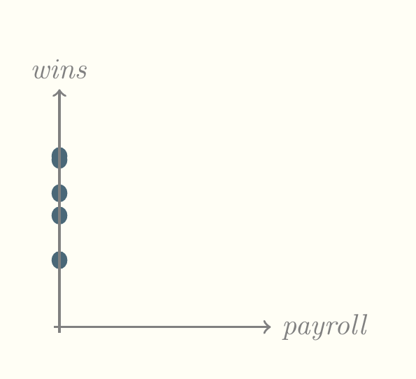
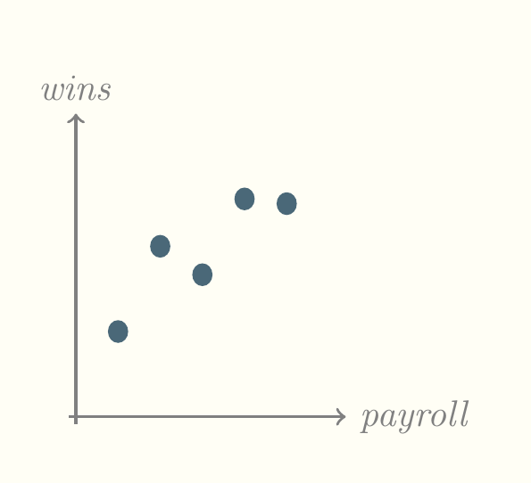
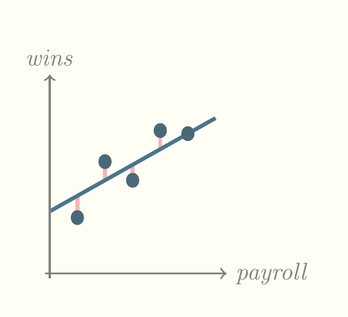
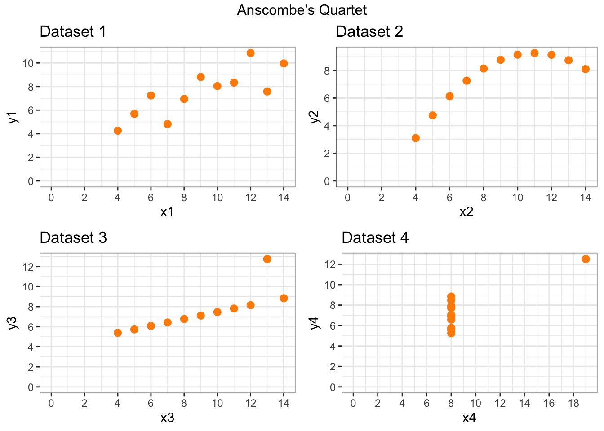

9 Introduction to Linear Regression
9.1 Recap week 8: Inference for numerical data
- Textbook section 7.1 One-sample means with the t-distribution
- Textbook section 7.2 Paired data
- Textbook section 7.3 Difference of two means
- Textbook section 7.4 Power calculations for a difference of means
- Textbook section 7.5 Comparing many means with ANOVA
9.2 Linear Regression
9.2.1 Introduction
Let’s start with an example. Suppose we know how many times a team has won and we can graph it as follows. I haven’t included a scale on the graph but the underlying numbers of wins are 9, 15, 18, 22.5 (a tie), and 23.
What is our best prediction of the number of wins for a new team, irrespective of any other information. The answer is the mean of this number of wins, 17.5. It’s not a very good prediction but it’s the best we can do, given what little we know. Now suppose we know how much the team spends on player salaries. We’ll call that variable payroll and add it to the graph.

Now we can see a pattern. Teams that spend more win more! But that’s not strictly true because there must be other variables at play. Right now, we don’t know what those variables are. But the best prediction we can make for the number of wins for a given new team depends in part on its payroll. We can now draw a diagonal line through this cloud of points and say that that line represents the best prediction for number of wins, like so.
One immediate question to ask is whether the diagonal line pictured above is the best line. People searched for ways of finding the best line for a long time before the most popular method, least squares, was published in 1805. That is the method used most frequently by software but other methods have emerged since then.
The best line is often called the least squares line and it is characterized by two numbers, the slope and the intercept. The intercept is the height at which it intersects the y axis and the slope is the ratio of its rise (its increaase or decrease on the y axis) over its run (its increase or decrease on the x axis). Both the slope and intercept can be positive or negative. A slope of zero or infinity is meaningless. In the statistics world, the intercept is usually called \(\beta_0\), pronounced beta nought, and the slope is usually called \(\beta_1\), pronounced beta one. The reason we use the numeral one is because additional slopes will be considered when we talk about multiple regression.
The Diez, Çetinkaya-Rundel, and Barr (2019) textbook differs a bit from standard practice, using the Latin letter b in place of the Greek \(\beta\). This works well from my point of view because Latin letters are often used to denote estimates of parameters, while the parameters themselves are denoted by Greek letters. Keep in mind that we’re always working with samples so we’re estimating the true slope and intercept with \(b_1\) and \(b_0\). Other statistics books sometimes use \(\hat{\beta}\) to refer to estimates, which is kind of cumbersome.
Most of our discussion of regression will focus on this least squares line and how good it is. Keep in mind that the word regression is more general than least squares. There are other methods and applications. Least squares is just the easiest way to introduce regression.
What does the term least squares mean? In the following picture, we have added vertical lines connecting the dots to the least squares line. The squares of the lengths of these lines are the way we measure the quality of the line.

In the following pictures, the prediction line on the right is better than that on the left by an amount proportional to the difference between the total length of pink lines in the two pictures. Notice that both lines represent the very best possible prediction for that set of dots. It’s just that, on the right hand side, there’s a closer correspondence between payroll and wins.

9.2.2 Correlation
Correlation is a concept that measures the strength of the linear relationship between two variables. We usually use Pearson’s correlation coefficient, \(r\), to measure this kind of relationship. Note that our textbook uses \(R\) instead of \(r\) to denote this relationship. This is unfortunate, because almost every other statistics book makes a distinction between \(R\) as the multiple correlation coefficient and \(r\) as Pearson’s correlation coefficient. They happen to be identical in the case of one \(x\) and one \(y\), but soon we will consider the case of more than one \(x\), where they differ.
\[r=\frac{1}{n-1}\sum^n_{i=1}\frac{x_i-\bar{x}}{s_x}\frac{y_i-\bar{y}}{s_y}\]
9.2.3 Least squares line
Diez, Çetinkaya-Rundel, and Barr (2019) gives the following formulas for finding the least squares line.
- Find the slope.
\[b_1=\frac{s_y}{s_x}r\]
- Find the intercept.
\[b_0=\bar{y}-b_1\bar{x}\]
Typically, you use software to identify these numbers. For example, consider the payroll / wins example from above, calculated in R.
y<-c(9,18,15,23,22.5)
x<-c(5,10,15,20,25)
summary(lm(y~x))
Call:
lm(formula = y ~ x)
Residuals:
1 2 3 4 5
-2.1 3.7 -2.5 2.3 -1.4
Coefficients:
Estimate Std. Error t value Pr(>|t|)
(Intercept) 7.9000 3.4039 2.321 0.1030
x 0.6400 0.2053 3.118 0.0526 .
---
Signif. codes: 0 '***' 0.001 '**' 0.01 '*' 0.05 '.' 0.1 ' ' 1
Residual standard error: 3.246 on 3 degrees of freedom
Multiple R-squared: 0.7642, Adjusted R-squared: 0.6856
F-statistic: 9.722 on 1 and 3 DF, p-value: 0.05256I input the number of wins as \(y\) and the amount of the payroll as \(x\). Then I constructed a linear model of \(y\) explained by \(x\). The lm() function constructs a linear model and the tilde character (\(\sim\)) separates the response variable \(y\) from the explanatory variable \(x\). The summary() function is wrapped around the lm() function to provide the most commonly accessed values of the output of the lm() function.
The first value output by summary() is the call. This simply shows the formula entered, which in this case was \(y\sim x\).
The next value output by summary() is a list of residuals. These are the differences between the predicted values and the actual values of wins.
The third value output by summary() is the coefficients table. The \(b\) values are listed in the Estimate column. Instead of being named \(b_0\) and \(b_1\) they are called (Intercept) and x. The remainder of this table consists of statistics about them. The second column is standard error, the third column is the \(t\)-statistic, which is the ratio of the estimate to its standard error. The third column is the \(p\)-value, which is the probability of seeing the preceding \(t\)-statistic or a larger one if the null hypothesis is true. The null hypothesis here is that \(x\) does not predict \(y\).
The last column in the coefficents table contains the significance codes. In this case, \(x\) gets a significance code of dot (.). Below the coefficients table is a legend for the significance codes. That tells us that dot means that the \(p\)-value for \(x\) is below 0.1. The blank in the other row tells us that the significance code for the intercept is less than 1, which it must be because probabilities can be no larger than 1.
Below the coefficients table we see four important values expressed - Multiple R-squared, which is identical to \(r^2\) above, - Adjusted R-squared, which we will discuss when we discuss multiple linear regression, - the F-statistic, which we will also discuss under multiple linear regression, and - the \(p\)-value of the F-statistic.
These latter values are all more interesting in the case of multiple linear regression. For simple linear regression we have enough information in the body of the coefficients table to make a judgment about whether the linear model \(y\sim x\) is sufficient to explain a team’s wins. That judgment depends on whether we are being casual, in which case the model is sufficient, or whether we have money riding on it, in which case the model is just barely insufficient.
9.2.4 Assumptions
Bear in mind that we make four big assumptions in using this model at all. The assumptions are mentioned in the book as follows.
- Linearity: the data show a linear trend, identified by a scatterplot for instance
- Normally distributed residuals: identified by a Q-Q plot, to be described later
- Constant variability: \(x\) does not vary more or less depending on \(y\)
- Independent observations: there is not a pattern like seasonality or growth or decline in the underlying phenomenon being analyzed (special statistics tools are used for that)
Most textbooks use more technical terms for these concepts, especially homoscedasticity for constant variability and heteroscedasticity for non-constant variability. This book just doesn’t want to introduce too much terminology.
The most common assumptions violated in my experience are the first and third. There is often a curvilinear pattern in data that is not captured by a linear model. Also, graphs of data often exhibit a pattern like the cross-section of a horn, which is non-constant variability or heteroscedasticity.
9.2.5 The Multiple Coefficient of Determination
\(R^2\) is the most common measure of the strength of a linear relationship, partly because it varies between 0 and 1. It is the proportion of variability in the data explained by the model. It is very domain dependent. For a lot of cases, anything below 0.8 indicates a poor fit. On the other hand, there are areas of physics where 0.1 explains enough of the data to be valuable. You have to consider the domain when evaluating \(R^2\).
9.2.6 Categorical Variables
With linear regression, the \(y\) variable must NEVER be categorical. If you try to do regression in R with the \(y\) variable as categorical, you’ll get an error message. There is another procedure you can do, called logistic regression, which has a categorical \(y\). We’ll discuss that later. But for now, bear in mind when you form a model, the outcome is always a continuously valued variable.
On the other hand, any or all of the input variables may be categorical. Note the book’s example of Mario Kart sales. The categorical variable condition has two levels or categories, whether the game is new or used. The outcome variable is the price, which is of course a continuous variable. When you input a categorical variable in R, it automatically encodes it as a number. In the Mario Kart case, the numbers are zero and one. The condition new is shown in the same place on the R output as \(b_1\) and the condition used is shown as the intercept. The main idea to understand here is the difference between the two, where the used condition is zero and the new condition is the difference between the price of new and used.
9.2.7 Outliers
Back in the nineteen seventies, several prominent statisticians said that statistics needed visualization. Their influece is actually responsible for my teaching visualization in this course. One of them, Francis Anscombe, published a data frame that showed how misleading elementary statistics can be without visualization. This data frame has come to be called Anscombe’s quartet and it is often shown to students. Here it is.
| x1 | x2 | x3 | x4 | y1 | y2 | y3 | y4 |
|---|---|---|---|---|---|---|---|
| 10 | 10 | 10 | 8 | 8.04 | 9.14 | 7.46 | 6.58 |
| 8 | 8 | 8 | 8 | 6.95 | 8.14 | 6.77 | 5.76 |
| 13 | 13 | 13 | 8 | 7.58 | 8.74 | 12.74 | 7.71 |
| 9 | 9 | 9 | 8 | 8.81 | 8.77 | 7.11 | 8.84 |
| 11 | 11 | 11 | 8 | 8.33 | 9.26 | 7.81 | 8.47 |
| 14 | 14 | 14 | 8 | 9.96 | 8.10 | 8.84 | 7.04 |
| 6 | 6 | 6 | 8 | 7.24 | 6.13 | 6.08 | 5.25 |
| 4 | 4 | 4 | 19 | 4.26 | 3.10 | 5.39 | 12.50 |
| 12 | 12 | 12 | 8 | 10.84 | 9.13 | 8.15 | 5.56 |
| 7 | 7 | 7 | 8 | 4.82 | 7.26 | 6.42 | 7.91 |
Each \(x,y\) pair of this quartet has the same basic statistics and the exact same least squares line. But look at a visualization of them.

The power of outliers can be seen in datasets 3 and 4 and the power of a nonlinear relationship can be seen in dataset 2.
9.3 Inference for linear regression
9.3.1 Confidence intervals
The textbook gives formulas for computing confidence intervals. Another way to do so is to use software, such as R. You can use the confint() function to find confidence intervals for coefficients of a linear model. For example, consider our payroll / wins example above.
confint(lm(y~x)) 2.5 % 97.5 %
(Intercept) -2.93279043 18.732790
x -0.01324184 1.2932429.4 Multiple regression intro (Chapter 9)
Everything we’ve done so far has assumed that we know one piece of information’s relationship to another piece of information. Take the example of teams, where we knew the payroll and want to know the number of wins. Suppose we also knew a number of other statistics that might affect wins. How would we incorporate them? The answer is simple. We add them. Because we’re using a linear equation, that is, the equation of a line to model the data, there’s no reason we can’t add terms to the equation. These terms are additive, meaning that we add each term and each term has a coefficient. So now, our estimate of \(y\), which we call \(\hat{y}\), looks like this for \(n\) terms.
\[\hat{y}=b_0+b_1x_1+b_2x_2+\cdots+b_nx_n\]
In R, we simply add the column names. For example, consider the built-in data frame mtcars where the outcome variable is mpg. We can construct a model of the relationship between mpg and two input variables we suspect of influencing mpg as follows.
with(mtcars,summary(lm(mpg ~ hp+wt)))
Call:
lm(formula = mpg ~ hp + wt)
Residuals:
Min 1Q Median 3Q Max
-3.941 -1.600 -0.182 1.050 5.854
Coefficients:
Estimate Std. Error t value Pr(>|t|)
(Intercept) 37.22727 1.59879 23.285 < 2e-16 ***
hp -0.03177 0.00903 -3.519 0.00145 **
wt -3.87783 0.63273 -6.129 1.12e-06 ***
---
Signif. codes: 0 '***' 0.001 '**' 0.01 '*' 0.05 '.' 0.1 ' ' 1
Residual standard error: 2.593 on 29 degrees of freedom
Multiple R-squared: 0.8268, Adjusted R-squared: 0.8148
F-statistic: 69.21 on 2 and 29 DF, p-value: 9.109e-12The output looks a bit different now. First, there are 32 residuals, so the individual residuals are not listed. Instead, you see summary statistics for the residuals.
Next, look at the coefficients table. There are three rows now, for the intercept, for hp, and for wt. Notice that all three have significance codes at the end of the row. Normally, you shouldn’t be concerned about the significance code for the intercept, but the other two are interesting. The code for hp is two stars, meaning that it is less than 0.01, while the code for wt is 1.12e-06, which is abbreviated scientific notation, meaning to take 1.12 and shift the decimal point six places to the left, giving 0.00000112 as the decimal equivalent.
The Multiple R-squared is 82 percent and the Adjusted R-squared is 81 percent. This is a good sign because the Adjusted R-squared is adjusted for the case where you have included too many variables on the right hand side of the linear model formula. If it’s similar to Multiple R-squared, that means you probably have not included too many variables.
The \(F\)-statistic is important now, because of its interpretation. The \(F\)-statistic tells you that at least one of the variables is significant, taken in combination with the others. The \(t\)-statistics only give the individual contribution of the variables, so it’s possible to have a significant \(t\)-statistic without a significant \(F\)-statistic. The first thing to check in regression output is the \(F\)-statistic. If it’s too small, i.e., has a large \(p\)-value, try a different model.
You might think that including more variables results in a strictly better model. This is not true for reasons to be explored later. For now, try including all the variables in the data frame by the shorthand of a dot on the right hand side of the formula.
summary(lm(mpg ~ ., data=mtcars))
Call:
lm(formula = mpg ~ ., data = mtcars)
Residuals:
Min 1Q Median 3Q Max
-3.4506 -1.6044 -0.1196 1.2193 4.6271
Coefficients:
Estimate Std. Error t value Pr(>|t|)
(Intercept) 12.30337 18.71788 0.657 0.5181
cyl -0.11144 1.04502 -0.107 0.9161
disp 0.01334 0.01786 0.747 0.4635
hp -0.02148 0.02177 -0.987 0.3350
drat 0.78711 1.63537 0.481 0.6353
wt -3.71530 1.89441 -1.961 0.0633 .
qsec 0.82104 0.73084 1.123 0.2739
vs 0.31776 2.10451 0.151 0.8814
am 2.52023 2.05665 1.225 0.2340
gear 0.65541 1.49326 0.439 0.6652
carb -0.19942 0.82875 -0.241 0.8122
---
Signif. codes: 0 '***' 0.001 '**' 0.01 '*' 0.05 '.' 0.1 ' ' 1
Residual standard error: 2.65 on 21 degrees of freedom
Multiple R-squared: 0.869, Adjusted R-squared: 0.8066
F-statistic: 13.93 on 10 and 21 DF, p-value: 3.793e-07You might find this output a bit surprising. You know from the \(F\)-statistic that at least one of the variables is contributing significantly to the model but individually, the contributions seem minimal based on the small \(t\)-statistics. The model is only a bit better, explaining 86 percent of the variability in the data, and the adjusted \(R^2\) value hasn’t improved at all, suggesting that you may have too many variables.
At this stage, you would probably remove some variables, perhaps by trial and error. How would you do this? You could start by running linear models over and over again. For example, you could construct one linear model for each variable and see which one has the largest contribution. Then you could try adding a second variable from among the remaining variables, and do that with each remaining variable, until you find one that adds the Largest contribution. You could continue in this way until you’ve accounted for all the variables, but would take forever to do. Luckily, R has functions to assist with this process and run regressions for you over and over again. I’m going to demonstrate one of them now for which we have to add the leaps package. I should point out that this involves doing some machine learning which is not strictly in the scope of this class, but will save you a lot of time.
library(caret)
library(leaps)
set.seed(123)
train.control <- trainControl(method = "cv", number = 10)
m <- train(mpg ~ ., data = mtcars,
method = "leapBackward",
tuneGrid = data.frame(nvmax = 1:10),
trControl = train.control
)
m$results nvmax RMSE Rsquared MAE RMSESD RsquaredSD MAESD
1 1 3.528852 0.8077208 3.015705 1.765926 0.2320177 1.529370
2 2 3.104015 0.8306301 2.507496 1.355870 0.2108183 0.884356
3 3 3.211552 0.8255871 2.700867 1.359334 0.2077318 1.033360
4 4 3.148479 0.8296845 2.630645 1.354017 0.1908016 1.074414
5 5 3.254928 0.8164973 2.737739 1.266874 0.2309531 1.044970
6 6 3.259540 0.8212797 2.749594 1.227337 0.2493678 1.043727
7 7 3.322310 0.8570599 2.787698 1.408879 0.1592820 1.153164
8 8 3.297613 0.8666992 2.744000 1.364396 0.1529011 1.114000
9 9 3.330123 0.8632282 2.751539 1.385199 0.1600841 1.111120
10 10 3.286242 0.8588116 2.715828 1.362054 0.1739366 1.120088m$bestTune[,1][1] 2summary(m$finalModel)Subset selection object
10 Variables (and intercept)
Forced in Forced out
cyl FALSE FALSE
disp FALSE FALSE
hp FALSE FALSE
drat FALSE FALSE
wt FALSE FALSE
qsec FALSE FALSE
vs FALSE FALSE
am FALSE FALSE
gear FALSE FALSE
carb FALSE FALSE
1 subsets of each size up to 2
Selection Algorithm: backward
cyl disp hp drat wt qsec vs am gear carb
1 ( 1 ) " " " " " " " " "*" " " " " " " " " " "
2 ( 1 ) " " " " " " " " "*" "*" " " " " " " " " coef(m$finalModel,m$bestTune[,1])(Intercept) wt qsec
19.746223 -5.047982 0.929198 summary(lm(mpg~wt+qsec,data=mtcars))
Call:
lm(formula = mpg ~ wt + qsec, data = mtcars)
Residuals:
Min 1Q Median 3Q Max
-4.3962 -2.1431 -0.2129 1.4915 5.7486
Coefficients:
Estimate Std. Error t value Pr(>|t|)
(Intercept) 19.7462 5.2521 3.760 0.000765 ***
wt -5.0480 0.4840 -10.430 2.52e-11 ***
qsec 0.9292 0.2650 3.506 0.001500 **
---
Signif. codes: 0 '***' 0.001 '**' 0.01 '*' 0.05 '.' 0.1 ' ' 1
Residual standard error: 2.596 on 29 degrees of freedom
Multiple R-squared: 0.8264, Adjusted R-squared: 0.8144
F-statistic: 69.03 on 2 and 29 DF, p-value: 9.395e-12The preceding code uses a process of backward selection of models and arrives at a best model with two variables. Backward selection starts with all the variables and gradually removes the worst one at each iteration.
The following code uses a process of sequential selection, which combines both forward and backward. It takes longer to run, but can result in a better model. In this case, it chooses four variables.
m <- train(mpg ~ ., data = mtcars,
method = "leapSeq",
tuneGrid = data.frame(nvmax = 1:10),
trControl = train.control
)
m$results nvmax RMSE Rsquared MAE RMSESD RsquaredSD MAESD
1 1 3.338459 0.9001241 2.890096 1.0951033 0.1013687 0.9516300
2 2 3.189923 0.8859776 2.582903 0.6838624 0.1267838 0.4331819
3 3 2.941144 0.8620702 2.488212 0.9202376 0.1449517 0.6399695
4 4 2.879207 0.8617366 2.480590 1.0315877 0.1534301 0.8871564
5 5 3.132200 0.8965810 2.747981 1.0959380 0.1336679 0.9911532
6 6 3.010670 0.9150866 2.656875 1.0023198 0.1083813 0.8800647
7 7 2.919346 0.9260098 2.499461 0.8913467 0.1133718 0.7935931
8 8 2.985337 0.9085432 2.585924 0.9516997 0.1248117 0.8376843
9 9 3.022897 0.9194308 2.609043 1.1395931 0.1111588 1.0913428
10 10 3.257194 0.8988626 2.811998 1.3089386 0.1423077 1.2115681m$bestTune[,1][1] 4summary(m$finalModel)Subset selection object
10 Variables (and intercept)
Forced in Forced out
cyl FALSE FALSE
disp FALSE FALSE
hp FALSE FALSE
drat FALSE FALSE
wt FALSE FALSE
qsec FALSE FALSE
vs FALSE FALSE
am FALSE FALSE
gear FALSE FALSE
carb FALSE FALSE
1 subsets of each size up to 4
Selection Algorithm: 'sequential replacement'
cyl disp hp drat wt qsec vs am gear carb
1 ( 1 ) " " " " " " " " "*" " " " " " " " " " "
2 ( 1 ) "*" "*" " " " " " " " " " " " " " " " "
3 ( 1 ) "*" " " "*" " " "*" " " " " " " " " " "
4 ( 1 ) " " " " "*" " " "*" "*" " " "*" " " " " coef(m$finalModel,m$bestTune[,1])(Intercept) hp wt qsec am
17.44019110 -0.01764654 -3.23809682 0.81060254 2.92550394 summary(lm(mpg~hp+wt+qsec+am,data=mtcars))
Call:
lm(formula = mpg ~ hp + wt + qsec + am, data = mtcars)
Residuals:
Min 1Q Median 3Q Max
-3.4975 -1.5902 -0.1122 1.1795 4.5404
Coefficients:
Estimate Std. Error t value Pr(>|t|)
(Intercept) 17.44019 9.31887 1.871 0.07215 .
hp -0.01765 0.01415 -1.247 0.22309
wt -3.23810 0.88990 -3.639 0.00114 **
qsec 0.81060 0.43887 1.847 0.07573 .
am 2.92550 1.39715 2.094 0.04579 *
---
Signif. codes: 0 '***' 0.001 '**' 0.01 '*' 0.05 '.' 0.1 ' ' 1
Residual standard error: 2.435 on 27 degrees of freedom
Multiple R-squared: 0.8579, Adjusted R-squared: 0.8368
F-statistic: 40.74 on 4 and 27 DF, p-value: 4.589e-11Which model is better? The latter model has the best adjusted \(R^2\) value. But it also has what appears to be a spurious variable, hp. It could be that hp is contributing indirectly, by being collinear with one of the other variables. Should we take it out and try again or should we accept the two variable model? That depends on several factors.
There is a principle called Occam’s Razor, named after William of Occam (who didn’t invent it, by the way—things often get named after popularizers rather than inventors). The principle states that, if two explanations have the same explanatory power, you should accept the simpler one. In this context, simpler means fewer variables. The tricky part is what is meant by the same explanatory power. Here we have a comparison of 0.8368 adjusted \(R^2\) vs 0.8144. Are those close enough to be considered the same? It depends on the context. If you’re a car buyer I would say yes but if you’re a car manufacturer I would say no. Your opinion might differ. It’s easy to teach the mechanics of these methods (even if you don’t think so yet!) but much harder to come up with the insights to interpret them. (Actually, I would probably choose the three variable model of wt, qsec, and am, but you can test that for yourself.)